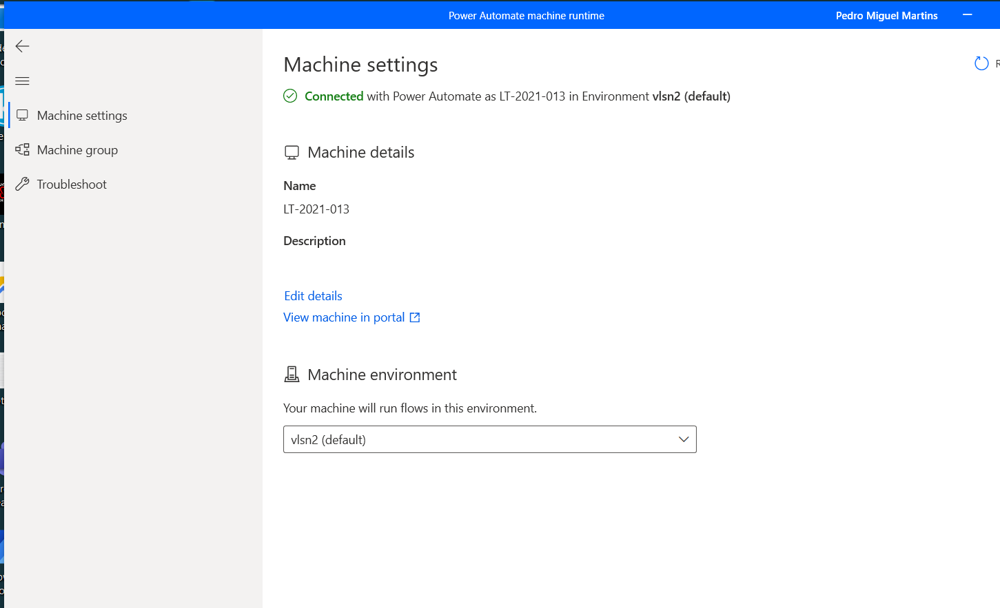
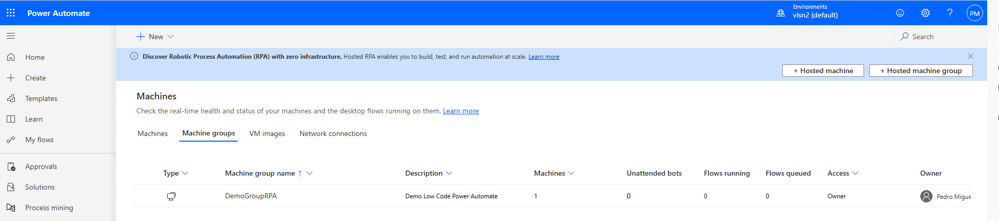
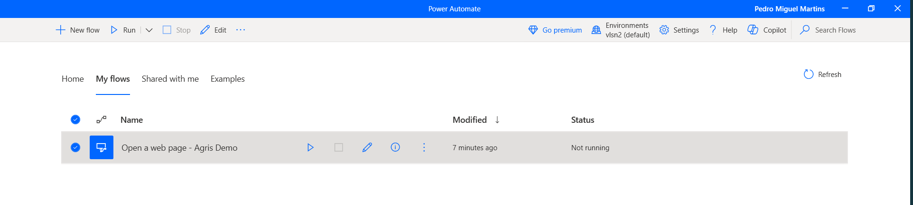
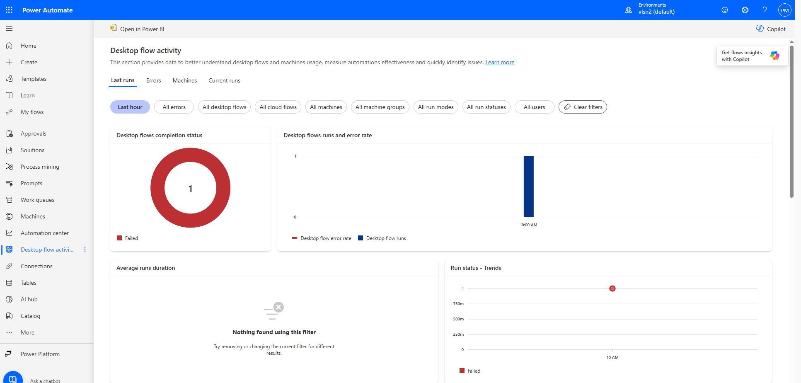
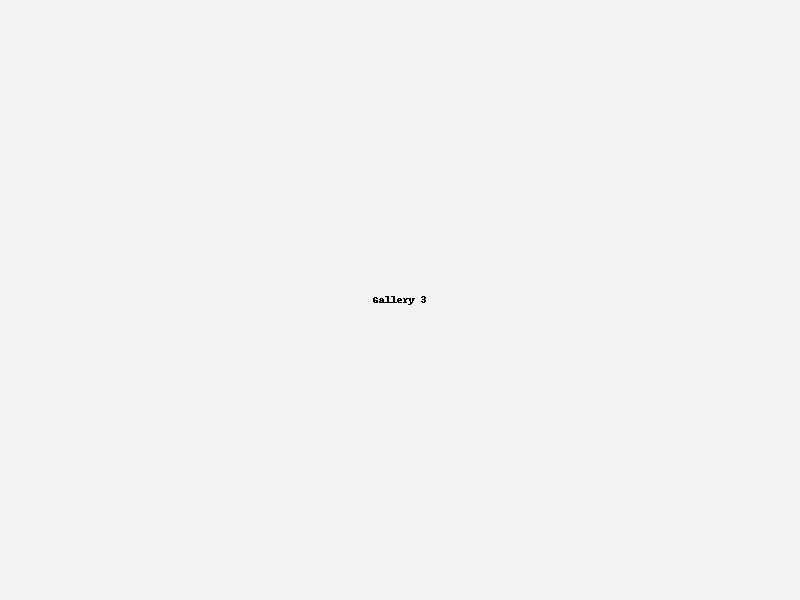

Como Configurar o Power Automate Desktop e Monitorar Analytics
Por [Seu Nome], [Data]
Introdução
Power Automate Desktop traz low-code RPA para Windows. Neste tutorial, você aprenderá a:
- Instalar e conectar o agente PAD
- Registrar sua máquina
- Criar grupos de máquinas
- Construir e executar fluxos desktop
- Monitorar via painel de atividade
- Usar Power BI para insights
Pré-requisitos
- Conta Microsoft 365 com licença Power Automate
- Permissão de administrador no Windows
- Acesso à internet ao portal Power Automate
1. Instalar Power Automate Desktop
- Baixe o instalador em aka.ms/PADDownload.
- Execute o MSI como administrador e conclua a instalação.
- Abra o PAD e faça login.
2. Configurar o Machine Runtime
- No PAD, vá em Configurações → Machine runtime.
- Baixe e instale o agente.
- Faça login e selecione o ambiente.

3. Registrar sua Máquina
- Acesse o portal do Power Automate.
- Navegue até Máquinas → Máquinas.
- Clique em + Máquina, dê um nome e salve.
4. Criar um Grupo de Máquinas
Para balancear cargas entre vários agentes:
- No portal, acesse Máquinas → Grupos de máquinas.
- Clique em + Grupo de máquinas e adicione suas máquinas.

5. Criar & Executar um Fluxo Desktop
- No PAD ou portal, crie um novo fluxo desktop.
- Arraste ações, salve e execute localmente.

6. Monitorar Atividade
- Abra o painel Atividade de fluxo desktop no portal.
- Filtre por período, fluxo, máquina ou erros.

7. Insights no Power BI
Clique em Open in Power BI para relatórios avançados.
8. Vídeo Tutorial
9. Galeria de Imagens

Conclusão
Agora você está pronto para implementar, escalar e monitorar seus fluxos com análise avançada!